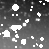
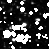

Genuine SPHEREx-derived visual previews. Field processed; named-source visibility, motion and variability are unverified. Wavelength, masking and calibration differences remain. Full original processing manifest

2025-09-01T10:04:17.466 UTC · 1.068 µm 2025W36_1A_0095_1

2026-09-09T21:42:13.876 UTC · 0.974 µm 2026W37_1A_0524_1